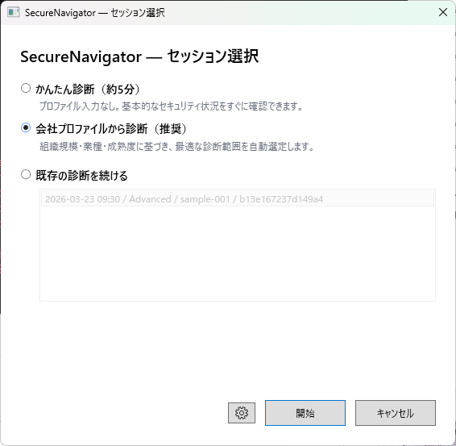
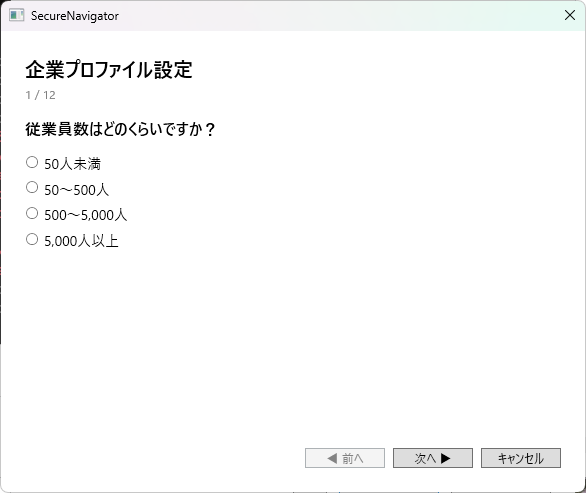
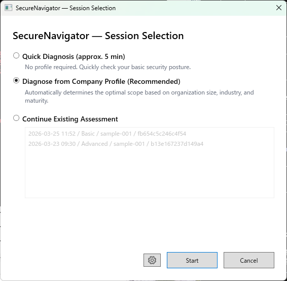
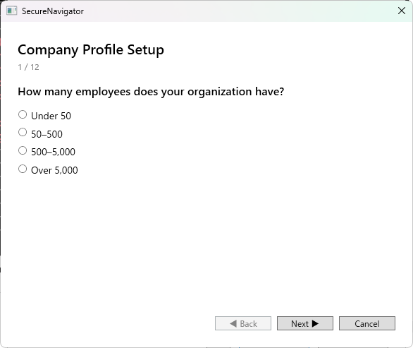

クイック診断とプロファイル診断、言語選択、セッション管理
SecureNavigator では、2つの診断モードから選択して新しい診断を開始できます。
組織のプロファイル情報を入力せずに、すぐに質問への回答を開始するモードです。短時間で概要レベルの評価を得たい場合に適しています。プロファイル情報がないため、業種や規模に応じた重み付けは適用されません。
業種、従業員規模、IT 環境の概要などのプロファイル情報を事前に入力してから診断を開始するモードです。入力されたプロファイルに基づいて、質問の重み付けや推奨事項がより組織に適した内容に調整されます。より精度の高い診断結果を得たい場合に推奨されます。

診断を作成する際に、質問文と回答選択肢の表示言語を選択できます。現在、日本語と英語に対応しています。言語の選択は診断データ自体には影響しません。診断の途中でも設定画面から言語を変更できます。
SecureNavigator では、診断の進捗をセッションとして保存できます。
| エディション | 保存可能なセッション数 |
|---|---|
| Free | 1 件 |
| Pro | 3 件 |
新しいセッションを作成すると、既存のセッションは保持されたまま、新しい診断が開始されます。Free 版でセッション数の上限に達した場合は、既存のセッションを削除してから新しい診断を作成する必要があります。
セッションはアプリを閉じても保存されます。次回起動時にホーム画面から前回の続きを再開できます。

Quick diagnosis vs profile diagnosis, language selection, session management
SecureNavigator offers two diagnosis modes to start a new assessment.
Start answering questions immediately without entering organizational profile information. This mode is suited for getting a high-level evaluation in a short time. Because no profile data is provided, industry- and size-based weighting is not applied.
Enter profile information such as industry, employee count, and IT environment overview before starting the assessment. The questions and recommendations are adjusted to better fit your organization based on the provided profile. This mode is recommended for a more accurate assessment.

When creating an assessment, you can choose the display language for questions and answer options. Currently, Japanese and English are supported. Language selection does not affect the assessment data itself. You can also change the language mid-assessment from the Settings screen.
SecureNavigator saves assessment progress as sessions.
| Edition | Maximum Saved Sessions |
|---|---|
| Free | 1 |
| Pro | 3 |
Creating a new session keeps existing sessions intact and starts a fresh assessment. If you reach the session limit on the Free edition, you must delete an existing session before creating a new one.
Sessions are preserved when you close the application. You can resume your previous assessment from the Home screen on the next launch.
